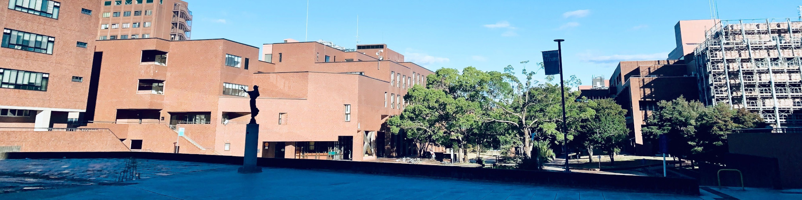

ABOUT US
筑波大学地理愛好会について
筑波大学地理愛好会は、地理に興味を持つ筑波大生の交流を目的として、2018年10月に設立されたサークルです。「地理」をキーワードとした活動を通して、地理の様々なトピックに興味関心を持つきっかけを創出することを目指しています。
地理に特段詳しい必要はなく、「地理」という言葉に少しでも惹かれた筑波大生が集まり、和気あいあいと活動しています。大学生活を楽しみたい、でもせっかく大学に来たのだから何か学びを得たい。そんな人に当会はぴったりです。
ACTIVITIES
活動紹介
巡検
「巡検」と称して全国各地を訪れています。学問的なトピックとして取り上げられる場所へ行くこともあれば、観光名所に行くこともあります。また、公的機関や企業の方にご協力いただき、施設の見学をさせていただくこともあります。
これまでに行った巡検の例
ミーティング
週1回程度、学期中は学内教室で、長期休業中はオンラインでミーティングを行っています。内容は主に次回の巡検の準備や、地理に関連する発表などとなっています。
班活動・その他
有志で班を結成し、自由に多岐に渡る活動を行うことで、活動の幅を拡大させることを目指しています。2022年10月現在、13の班が活動しています。
また、他にも、花火やスキーなどのイベントを実施予定です。 実際の活動事例については、Twitterモーメントや公式ブログKIAIにまとめております。ご覧ください。
FAQ
よくある質問
会費はどの程度かかるの？
必ず払わなければいけない会費は年1000円です。旅行や巡検の費用は参加者がその都度出し合っています。
学年、学類ごとの会員数は？
学年：4年生19名、3年生30名、2年生34名、1年生86名、修士課程11名
学類：人文12名、比文12名、日日1名、社学6名、国際3名、教育1名、心理1名、障害3名、生物9名、資源11名、地球29名、物理2名、化学2名、応理13名、工シス3名、社工22名、情科8名、メ創1名、知識4名、医学2名、看護1名、医療1名、総合学域群1類13名、2類9名
の計180名で活動しています(2022年7月26日現在)。どの学類の方も歓迎しています！男女比は男：女＝2：1くらいです。
学類：人文12名、比文12名、日日1名、社学6名、国際3名、教育1名、心理1名、障害3名、生物9名、資源11名、地球29名、物理2名、化学2名、応理13名、工シス3名、社工22名、情科8名、メ創1名、知識4名、医学2名、看護1名、医療1名、総合学域群1類13名、2類9名
の計180名で活動しています(2022年7月26日現在)。どの学類の方も歓迎しています！男女比は男：女＝2：1くらいです。
活動の頻度は？
季節や時期による変動が大きいですが、例えば2022年７月はミーティングが3回、会全体としての巡検が6本、班活動の一環としての巡検が4本実施されました。巡検については、多様なバリエーションの中から各自で行きたいものを選択するという形を取っています。
入会の方法は？
質問・取材やコラボ企画などのお問い合わせは？
公式LINE・Twitter・InstagramのDMや、当会のメールアドレス(tsuku.chirigmail.com)までお願いします。